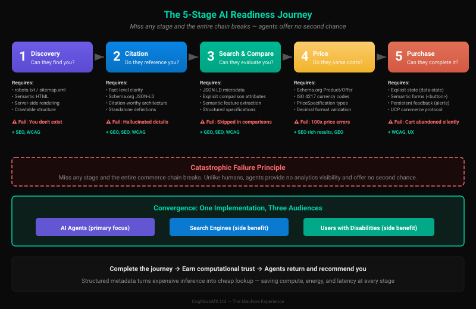

Without Level 1: You do not exist
The machine recommends competitors because you are not in its knowledge base (training gap) and it cannot find current information when users ask (inference gap). You are invisible.
When machines interact with your website, they follow a predictable journey with specific technical requirements at each stage. Miss any stage and the entire commerce chain breaks.

The machine does not know you exist. You are not in its knowledge base. At this level, AI systems are crawling the web — building training datasets and fetching pages in real time during user queries.
robots.txt compliance for training-time crawlerssitemap.xml for both training and inference mechanismsWithout Level 1: You do not exist
The machine recommends competitors because you are not in its knowledge base (training gap) and it cannot find current information when users ask (inference gap). You are invisible.
Side benefits: SEO improvement (organic search traffic) and WCAG compliance (semantic structure).
The machine is aware of your site and can recommend it. But awareness is not enough — it needs to extract facts that are accurate enough to cite.
Without Level 2: Hallucinated details
The machine knows you exist but cannot vouch for you. It fills the gaps with fabricated details, or moves on to a source it trusts more. Your brand is represented by fiction.
Side benefits: GEO (citations in AI-generated responses), SEO (rich snippets), and WCAG compliance (clear content structure).
The machine is building comparison lists, sorting by features, evaluating options. This is where purchase intent forms — and where many businesses become invisible.
Without Level 3: Skipped in comparisons
The machine cannot understand what you offer or how you compare. You are invisible in the shortlist. The customer never sees you as an option.
Side benefits: GEO (AI comparisons), SEO (structured data), and WCAG compliance (clear data presentation).
The machine needs exact pricing to make recommendations. Ambiguous number formatting, missing currency codes, and unstructured price data cause errors measured in orders of magnitude.
Product, Offer, PriceSpecificationWithout Level 4: 100x price errors
A river cruise priced at £2,030 was reported by an AI agent as £203,000. European number formatting, no PriceSpecification. The couple never booked. The cruise company never knew why.
Side benefits: SEO (product rich results), GEO (pricing citations), and WCAG compliance (clear pricing).
The machine must complete the transaction with confidence. Hidden state in JavaScript, non-semantic buttons, and ephemeral feedback messages create silent gaps that no analytics tool can detect.
<button> not <div class="btn">)role="alert" for important messages)data-state attributes for checkout progress trackingWithout Level 5: Cart abandoned silently
The machine cannot see what buttons do, cannot track checkout progress, and times out. Unlike a human who would phone support, the agent simply leaves. You never see it in your analytics.
Side benefits: WCAG (form accessibility) and user experience (faster checkouts for humans too).
Each level builds on the one below. Level 1 requires semantic HTML. Level 2 requires structured data. Level 3 requires JSON-LD. Level 4 requires Schema.org. Level 5 requires explicit state. Skip a level and everything above it is unreachable.
Sites that complete the full progression earn computational trust — machines return repeatedly through learned behaviour. Sites that stop short risk being bypassed. Unlike humans who persist through bad UX and can be won back with improvements, machines offer no second chance. You may never see them leave.
The fundamental difference that makes MX critical for commerce:
| Behaviour | Human Users | AI Agents |
|---|---|---|
| Persistence | High — will retry, call support, or use workarounds | Zero — encounters a gap once, times out, disappears |
| Gap visibility | Visible in analytics, heatmaps, support tickets | Silent — invisible in analytics, no trace, no second chance |
| Trust recovery | Can be won back with marketing, discounts, outreach | Learned behaviour — agents favour "reliable" nodes and bypass others |
| Scale | Hundreds or thousands per day | Millions of queries per day, growing exponentially |
| Level | Without MX | With MX |
|---|---|---|
| 1. Basic | Crawls links, hopes for a sitemap | Structured metadata, semantic HTML, declared in REGINALD |
| 2. Structured | Scrapes paragraphs, risks misattribution | Fact-level clarity in Schema.org JSON-LD, citation-ready architecture |
| 3. Signed | Infers attributes from unstructured text | Explicit comparison attributes in microdata — price, features, ratings |
| 4. Registered | Parses strings like "$9.99/mo" and guesses | Schema.org Product/Offer with ISO 4217 currency codes |
| 5. Audited | Navigates forms blind, gaps go undetected | Explicit DOM state, semantic forms, persistent confirmation feedback |
The same structural patterns that serve MX also serve two other audiences — with zero additional work:
The primary focus. Structured metadata, semantic HTML, Schema.org, and explicit state enable machines to find, understand, compare, price, and transact — without guessing.
Side benefit. Every MX pattern improves organic search: rich snippets, featured answers, product carousels. An MX-ready page is inherently SEO-optimised.
Side benefit. Semantic HTML, explicit form labels, role attributes, and persistent feedback are WCAG requirements. MX and accessibility converge on the same technical patterns.
The MX Cogify plugins cover the foundational metadata layer — Stages 1 and 2 of the journey. The full Machine Experience encompasses all five stages, including content strategy, accessibility architecture, pricing structure, and commerce readiness across your entire digital estate.
To understand the full picture, read the books (MX: The Protocols and MX: The Handbook) or get in touch for a consultation or audit.